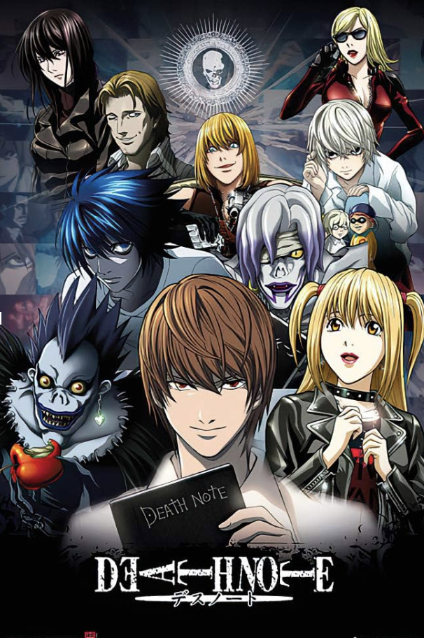
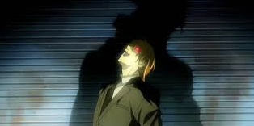

For my project, I am choosing to center it on anime and its impact on culture and commentary on social issues. The topic interests me because anime originates in Japan, their influence has moved far beyond Japan’s borders to influence pop culture, fashion, and language worldwide. They not only have global influence, but also provide commentary on themes such as identity, gender roles, war, technology, and social justice to name a few. Anime is especially popular among younger generations and serves as a window to how new generations interpret, challenge, or accept cultural norms and bond.
An example of anime providing social commentary is the series "Death Note". Light Yagami, the main character of the series, is a high school student who stumbles upon the Death Note, a mysterious notebook that grants the writer the ability to kill anyone with only a person’s name and face. Though already seems to have it all – a promising academic future as Japan’s highest exam scorer, a stable and comfortable household, loving parents, and attractive looks-- Yagami is dissatisfied with his current life and intends to use the notebook to create a new empire where he is king.

In the anime series, he starts off by furiously scribbling down names of all of the world’s major criminals in the notebook. He hopes to rid the world of all people he deems to be “rotten” and unjust so that only fair and kind people remain. As another character predicted earlier on in the show, that would leave Yagami as the only “rotten” human in the end.
We watch as he rides down a slippery slope of good intentions. At first, Light’s definition of evil was only people who hurt others. However, his definition eventually expands to anyone who opposes his vision or annoys him, regardless of their innocence. Yagami evolves to killing innocent bystanders to assert his dominance, detectives that seek to uncover his identity, and those whose presence he deems to be a nuisance.
Many in the world embrace Light Yagami, seeing him as a necessary evil or even a savior, tired of a system that seemingly fails them by sometimes assessing criminals as innocent or delaying their punishment. It highlights the societal yearning for order and accountability, even if it comes at a horrific price and explores the idea of people’s opinion of justice.
In this series, we see how this power to end people’s lives in an instant changes him psychologically. He started off as a normal, intelligent student who transformed into a paranoid, ruthless criminal. He became the very “evil” he sought to eradicate. My perspective on the anime was that the Death Note was not what changed his personality. Rather, it brought out the suppressed feelings and thoughts he had no way to express or execute in the past. Before finding the notebook. Light often expressed his boredom with the world and how criminals should be executed. He believed that everyone believes with this viewpoint but are too scared to express it for fear of people’s perception of them. The notebook only unleashed his arrogance and megalomania by enabling those facts of his nature to flourish.

Some ways of knowing I can incorporate into the project are personal experience, artistic and literary analysis, as well as historical and sociological context. For personal experience, I can include my subjective experiences when interpreting anime and include emotional responses, opinions of fan communities, and how these works influence my own values and identity. As for artistic analysis, I can interpret the visual symbolism and narrative techniques used in certain animes that make them unique. Since animes are set in a variety of time periods and locations, having an understanding of the settings’ context can help viewers better understand the themes and issues depicted.
These ways of knowing challenge the traditional documentary ways of knowing since they typically rely on archival footage, interviews, and narration. My approach of adding personal and fan testimony compliments traditional methods by adding lived experience and authenticity. It also challenges traditional methods by questioning the director and writers’ voices which are the ones traditionally valued/heard. This can highlight disconnects between authorial intent with the audience’s interpretation of the anime.